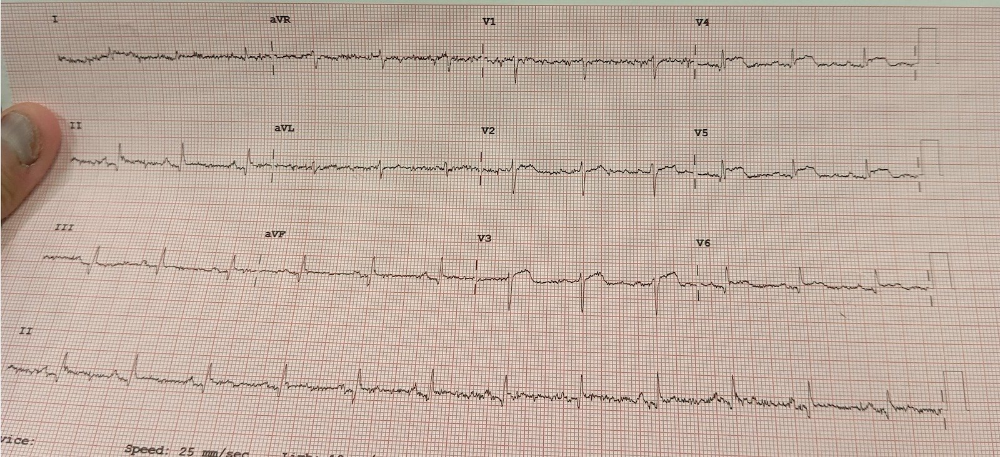
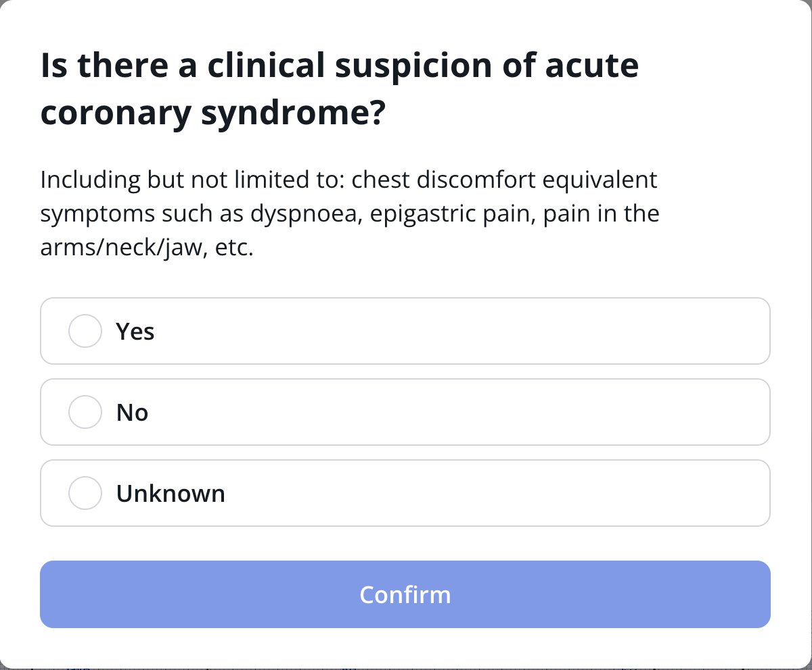
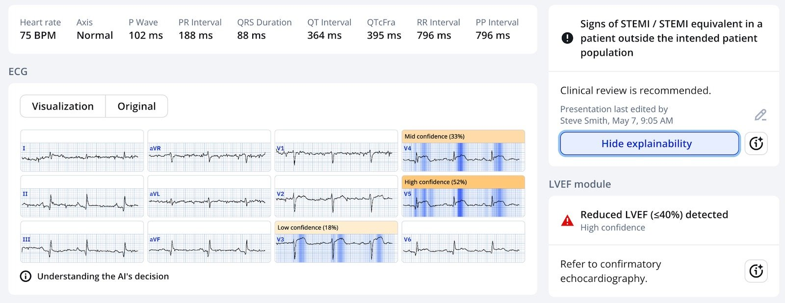
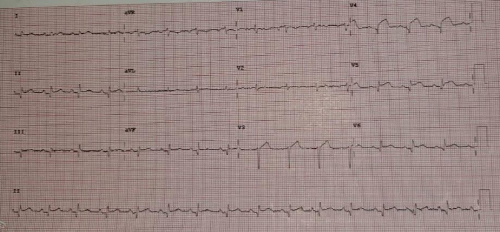
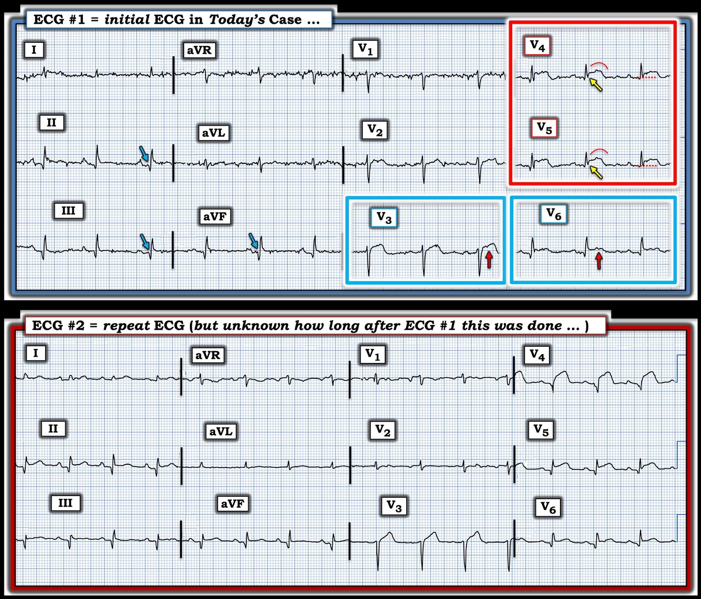

08/05/2025 — Queen of Hearts luôn hỏi (nếu thấy OMI): “Có nghi ngờ lâm sàng hội chứng vành cấp không?”
Bản dịch tiếng Việt của bài "The Queen always asks (if she sees OMI) “Is there a clinical suspicion of acute coronary syndrome”" – Dr. Smith’s ECG Blog. Giữ nguyên toàn bộ 6 hình ảnh của bản gốc.
Ca này do Asad Tasleem, bác sĩ nội trú Y học Cấp cứu ở Pakistan, gửi đến:
“Tôi là bác sĩ nội trú khoa cấp cứu (ED) tại một bệnh viện tuyến cuối ở Pakistan. Tôi tiếp nhận một bệnh nhân nam 70
tuổi có tiền sử đái tháo đường (DM), tăng huyết áp (HTN), đến viện vì té ngã không rõ cơ chế, có thể là một cơn ngất. Lúc đến viện, các
dấu hiệu sinh tồn của ông ổn định và mọi sự chú ý đều dồn vào biến dạng rõ rệt
ở chân trái, mà sau đó hóa ra là gãy cổ xương đùi.
Tôi cho ghi điện tâm đồ:


Bạn nghĩ gì?
= = =
Có ST chênh lên ở V2-V4 nhưng KHÔNG đạt tiêu chuẩn STEMI. Tuy nhiên, ST chênh lên (STE) đó nằm trong bối cảnh sóng R và điện thế (biên độ) QRS rất thấp. Như vậy, đây là ST chênh lên không tương xứng với QRS. Điều này có giá trị chẩn đoán tắc LAD cấp. Asad Tasleem đã nhận ra ngay lập tức.
Tôi đã gửi bản ghi này cho mô hình AI đọc điện tâm đồ PMCardio Queen of Hearts. Queen luôn hỏi về xác suất tiền nghiệm (pretest probability), vì điều đó có ý nghĩa then chốt với mọi xét nghiệm, và hoàn toàn có thể một điện tâm đồ trông như OMI lại KHÔNG phải OMI nếu xác suất tiền nghiệm rất thấp.


— Tôi đã trả lời “Không” cho câu hỏi này.


Bạn có thể thấy rằng, dù câu trả lời là “Không”, Queen vẫn lo ngại về OMI
= = =
Asad kể tiếp:
“Tôi thấy rất đáng nghi biến dạng phần cuối QRS (Terminal QRS distortion) ở các chuyển đạo
trước. Tôi vội báo khoa tim mạch và như mọi khi họ không bị thuyết phục vì
bệnh nhân không đau ngực. Troponin dương tính và tiếp tục tăng trong
các lần xét nghiệm liên tiếp.”
= = =
Smith: nói một cách chặt chẽ, “biến dạng phần cuối QRS” chỉ mới được chứng minh có độ đặc hiệu cao cho OMI do LAD nếu xuất hiện ở chuyển đạo V2 hoặc V3. Tuy vậy, nhiều khả năng đây cũng là một dấu hiệu có ý nghĩa ở V4.
= = =
Smith trả lời: “Với tôi, trông chắc chắn là OMI. Nếu không có triệu chứng
thiếu máu cục bộ cơ tim, dĩ nhiên phải hoài nghi. Nhưng cũng phải
giải thích được các dấu hiệu trên điện tâm đồ. Trông như OMI và Queen cũng đồng ý. Troponin đã tăng lên tới mức nào?”
Bình luận của Smith: Phải coi là OMI cho đến khi chứng minh được điều ngược lại, và ĐỪNG chờ troponin.
= = =
Asad trả lời: hs Troponin I tăng từ 2000ng/L lên 8000ng/L rồi 10000ng/L.
= = =
Sau đó, anh tìm được một điện tâm đồ ghi sau. Không chắc nó được ghi vào lúc nào.


Giờ thì không còn nghi ngờ gì về tắc LAD, ngay cả khi bệnh nhân không có triệu chứng, hoặc chỉ đau ngón chân.
Dù vậy, điều đó vẫn không thúc đẩy các bác sĩ tim mạch đưa ông vào phòng thông tim (cath lab).
Vài ngày sau, ông mới được đưa vào phòng thông tim và phát hiện tắc LAD 100%.
= = =
Những điểm cần học:
1. Bệnh nhân có thể bị nhồi máu cơ tim do tắc (Occlusion MI) cấp diện rộng mà không có bất kỳ triệu chứng nào.
2. Nếu điện tâm đồ cho thấy OMI rõ ràng, bạn cần chụp mạch vành ngay cả khi không có triệu chứng liên quan.
3. Nhồi máu cơ tim thầm lặng (silent MI) rất thường gặp, dù hầu như luôn được phát hiện nhiều ngày, nhiều tuần, nhiều tháng hoặc nhiều năm sau biến cố qua các xét nghiệm làm vì lý do khác, khi người ta thấy sóng Q trên điện tâm đồ, hoặc rối loạn vận động thành trên siêu âm tim. Ít gặp hơn là phát hiện nó qua các dấu hiệu điện tâm đồ CẤP trong một tình huống cấp, nhưng như bạn thấy, điều đó có thể xảy ra.
4. Nhồi máu cơ tim cấp không đau ngực, nhưng biểu hiện bằng các triệu chứng khác, rất thường gặp, khoảng 33% ở cả STEMI lẫn Non-STEMI (một thuật ngữ mà tôi không chịu nổi!).
Canto JG, Shlipak MG, Roger WJ. Prevalence, clinical characteristics, and mortality among patients with myocardial infarction presenting without chest pain (Tỷ lệ hiện mắc, đặc điểm lâm sàng và tử vong ở bệnh nhân nhồi máu cơ tim biểu hiện không đau ngực). Tạp chí JAMA 2000;283(24):3223–9.
= = =
Xem bài báo này về nhồi máu cơ tim thầm lặng:
Qureshi WT, Zhang Z-M, Chang PP, và cs. Silent myocardial infarction and long-term risk of heart failure: The ARIC study (Nhồi máu cơ tim thầm lặng và nguy cơ suy tim dài hạn: nghiên cứu ARIC). Tạp chí J Am Coll Cardiol [Internet] 2018;71(1):1–8. Truy cập tại: http://dx.doi.org/10.1016/j.jacc.2017.10.071
Tóm tắt
Bối cảnh:
Mặc dù nhồi máu cơ tim thầm lặng (SMI) chiếm khoảng một nửa tổng số ca nhồi máu cơ tim (MI), nguy cơ suy tim (HF) ở bệnh nhân SMI vẫn chưa được xác lập rõ.
Mục tiêu:
Mục đích của nghiên cứu này là khảo sát mối liên quan của SMI và nhồi máu cơ tim biểu hiện lâm sàng (CMI) với HF, so với bệnh nhân không có MI.
Phương pháp:
Phân tích này gồm 9,243 người tham gia nghiên cứu ARIC (Atherosclerosis Risk In Communities — Nguy cơ xơ vữa động mạch trong cộng đồng) không có bệnh tim mạch tại thời điểm ban đầu (lần thăm khám ARIC 1: 1987 đến 1989). SMI được định nghĩa là có bằng chứng điện tâm đồ của MI mà không có CMI, tính từ thời điểm ban đầu cho đến lần thăm khám ARIC 4 (1996 đến 1998). Các biến cố HF được xác định bắt đầu từ lần thăm khám ARIC 4 cho đến năm 2010 ở những người không có HF trước lần thăm khám đó.
Kết quả:
Giữa lần thăm khám ARIC 1 và 4, đã xảy ra 305 ca SMI và 331 ca CMI. Sau lần thăm khám ARIC 4 và trong thời gian theo dõi trung vị 13.0 năm, đã xảy ra 976 biến cố HF. Tỷ lệ mới mắc HF cao hơn ở cả nhóm CMI và nhóm SMI so với nhóm không có MI (tỷ lệ mới mắc trên 1,000 người-năm lần lượt là 30.4, 16.2 và 7.8; p < 0.001). Trong mô hình hiệu chỉnh theo đặc điểm nhân khẩu học và các yếu tố nguy cơ HF, cả SMI (tỷ số nguy cơ [HR]: 1.35; khoảng tin cậy 95% [CI]: 1.02 đến 1.78) và CMI (HR: 2.85; KTC 95%: 2.31 đến 3.51) đều liên quan với tăng nguy cơ HF so với không có MI. Các mối liên quan này nhất quán trong các phân nhóm người tham gia được phân tầng theo một số yếu tố dự báo nguy cơ HF. Tuy nhiên, nguy cơ HF liên quan với SMI mạnh hơn ở những người trẻ hơn tuổi trung vị (53 tuổi) (HR: 1.66; KTC 95%: 1.00 đến 2.75 so với HR: 1.19; KTC 95%: 0.85 đến 1.66, theo thứ tự tương ứng; p tương tác chung theo loại MI <0.001).
Kết luận:
SMI liên quan với tăng nguy cơ HF. Cần có thêm nghiên cứu trong tương lai để khảo sát hiệu quả chi phí của việc tầm soát SMI như một phần của đánh giá nguy cơ HF, và để xác định các liệu pháp dự phòng nhằm cải thiện nguy cơ HF ở bệnh nhân SMI.
= = =
======================================
BÌNH LUẬN CỦA TÔI, bởi KEN GRAUER, MD (8/5/2025 — Cập nhật cho WordPress ngày 20/1/2026 ):
Bệnh nhân hôm nay là một người đàn ông 70 tuổi đến khoa cấp cứu (ED — Emergency Department) với bệnh sử té ngã không rõ cơ chế, có thể do ngất — dẫn đến gãy xương hông. Đáng chú ý — bệnh nhân này chưa bao giờ than đau ngực (CP — Chest Pain).
- Ghi nhận công của Dr. Tasleem: i) Vì đã xem điện tâm đồ của bệnh nhân ngay khi được phân công chăm sóc bệnh nhân này (có vẻ là vào buổi sáng sau hôm bệnh nhân nhập viện vì gãy xương hông) — và, ii) Vì đã nhận ra T-QRS-D (Terminal-QRS–Distortion — biến dạng phần cuối QRS) và các dấu hiệu điện tâm đồ khác gợi ý nhồi máu cấp, rồi Dr. Tasleem đã lập tức báo cho nhóm Tim mạch.
Dù đã nói như trên — Có một loạt thiếu sót trong ca hôm nay đáng được bàn luận. Trong đó có việc dường như không ai (ngoài Dr. Tasleem) đã làm những điều sau:
- i) Cân nhắc tầm quan trọng của việc cố gắng xác định VÌ SAO người đàn ông 70 tuổi này bị ngã (nhất là khi bệnh sử không cho phép loại trừ ngất là nguyên nhân gây ngã).
- ii) Hiểu rằng nhồi máu cơ tim cấp có thể xảy ra với tần suất đáng ngạc nhiên khi không có đau ngực.
- iii) Xem điện tâm đồ ban đầu (mà tôi đã đưa lại trong Hình 1) của bệnh nhân — hoặc, nếu có ai đó đã xem điện tâm đồ #1 — thì các dấu hiệu bất thường trên điện tâm đồ đã không được nhận ra (và điện tâm đồ ban đầu bất thường này đã không được ghi lại cho đến khi đã quá muộn).
- iv) Xử lý các hệ quả lâm sàng tiềm tàng của việc Troponin của bệnh nhân tăng dần (từ 2,000 — lên đến 10,000 ng/L) — đến mức thông tim mãi nhiều ngày sau khi đã biết các mức troponin tăng cao này mới được thực hiện.
=================================
Bài học cần rút ra …
- Thực thể nhồi máu cơ tim “thầm lặng” (silent MI) không phải là mới — đã được ghi nhận từ hơn 40 năm trước trong các nghiên cứu Framingham (Xem Bình luận của tôi trong bài ngày 6 tháng Mười Hai năm 2022, cùng nhiều bài khác).
- Tùy theo nghiên cứu nào trong y văn được trích dẫn (và tùy theo phương pháp nghiên cứu nào được sử dụng) — ít nhất 1/4 đến 1/3 tổng số ca MI xảy ra mà không có CP.
- Bình luận của tác giả #1: Tôi ngờ rằng các số liệu trong y văn về tần suất MI “thầm lặng” đã bị đánh giá thấp vì: i) Phương pháp mã hóa thường được dùng làm cách ghi nhận nhồi máu khi không có CP; — và, ii) Khái niệm tắc mạch vành cấp STEMI âm tính (tức là “OMI” cấp ) — chưa được biết đến vào thời điểm thực hiện các nghiên cứu cũ ước tính tần suất MI-không-CP — và ngay cả ngày nay, mô hình OMI (OMI Paradigm) vẫn chưa được quá nhiều bác sĩ lâm sàng đánh giá đúng.
Bình luận của tác giả #2: Nhận thức rằng phương pháp luận của y văn hiện có còn chưa hoàn hảo — điều cốt lõi là MI-không-CP là một hiện tượng thường gặp đến bất ngờ. Tôi vẫn ưa chuộng dữ liệu Framingham (Kannel & Abbott: N Engl J Med 311(18):1144-1147, 1984 — và — Kannel: Cardiol Cin 4(4):583-591, 1986) — vì cách các tác giả này phân tích sâu sắc về mặt lâm sàng những bệnh nhân được phát hiện có MI-không-CP:
- Khoảng một nửa số bệnh nhân trong Framingham được phát hiện có MI-không-CP — hoàn toàn không có triệu chứng, do đó là MI thực sự “thầm lặng”.
- Nửa còn lại số bệnh nhân có MI-không-CP — có “một biểu hiện khác” đóng vai trò triệu chứng “tương đương đau ngực” (tức là khó thở — đau bụng — triệu chứng “giống cúm” — mệt mỏi quá mức — ngất — thay đổi tri giác).
- Điểm MẤU CHỐT: Người đàn ông 70 tuổi trong ca hôm nay thuộc nhóm sau — ở chỗ ông có một cú ngã không giải thích được đủ nghiêm trọng để gây gãy xương hông — và không nhớ được mình bị vấp hay đột ngột ngất.
- ĐIỀU CỐT LÕI: Bệnh sử trong ca này lẽ ra phải ngay lập tức khiến ta đưa rối loạn nhịp tim và/hoặc nhồi máu cấp vào danh sách nguyên nhân có thể của một MI “thầm lặng” có thể có — mà với tình huống đó, điện tâm đồ ban đầu có lẽ là xét nghiệm số 1 quan trọng nhất cần làm (và cần được bác sĩ điều trị xem ngay khi điện tâm đồ vừa ghi xong).
= = =
Xem xét điện tâm đồ ban đầu của ca hôm nay:
Để rõ ràng, trong Hình 1 — Tôi đã đặt cả hai bản ghi của ca hôm nay cạnh nhau.
- Ở điện tâm đồ #1 — “mắt” tôi lập tức bị hút về chuyển đạo V4 và V5 (trong hình chữ nhật ĐỎ). Bất kể không có đau ngực (CP) — cần mặc định là tắc LAD cấp cho đến khi chứng minh được điều ngược lại, căn cứ vào: i) ST chênh lên dạng vòm (coving) đáng kể ở các chuyển đạo này; — ii) T-QRS-D (các mũi tên VÀNG ở các chuyển đạo này); — và, iii) Sóng Q nhỏ nhưng rõ ràng bất thường ở cả hai chuyển đạo V4 và V5.
- Các chuyển đạo V3 và V6 lân cận củng cố mối nghi ngờ mạnh của chúng tôi về một biến cố cấp — với đoạn ST thẳng đuỗn và chênh lên ở chuyển đạo V3 — cùng sóng Q kèm đoạn ST tối cấp và chênh lên ở chuyển đạo V6.
- Lưu ý #1: Mặc dù dữ liệu của BS. Smith và BS. Meyers ủng hộ giá trị chẩn đoán của T-QRS-D xuất phát từ việc nhận diện hiện tượng này ở chuyển đạo V2 và/hoặc V3 — những ca như ca hôm nay gợi ý rằng hiện tượng này nhiều khả năng cũng có giá trị khi thấy ở chuyển đạo V4 (và có lẽ ? ở chuyển đạo V5 — ít nhất là với ca hôm nay).
- Lưu ý #2: Các mũi tên XANH LAM trên điện tâm đồ #1 đánh dấu sóng Q ở mỗi chuyển đạo dưới. Dù vậy — nhiễu đường nền và hình ảnh có vẻ là sóng ST-T dẹt không đặc hiệu ở hầu như mọi chuyển đạo chi gây cản trở việc xác định nhồi máu thành dưới là cũ hay có thể là mới.
= = =
Hình 1: So sánh giữa 2 điện tâm đồ trong ca hôm nay. (Để dễ quan sát hơn — tôi đã số hóa điện tâm đồ gốc bằng PMcardio).


= = =
Điện tâm đồ ghi lại:
Như BS. Smith đã nêu — việc so sánh điện tâm đồ #2 với điện tâm đồ #1 trong Hình 1 cho thấy không còn nghi ngờ gì rằng tắc LAD cấp đang diễn ra (điều này cuối cùng đã được xác nhận bằng thông tim, nhưng được thực hiện quá nhiều ngày sau khi nhập viện).
- Lưu ý biên độ QRS còn giảm thêm ở điện tâm đồ #2 — với sự xuất hiện phức bộ QS ở chuyển đạo V3, sóng Q ở các chuyển đạo ngực bên sâu hơn — và giờ thậm chí còn có ST chênh lên rõ rệt hơn nữa ở chuyển đạo V4 (Đã có hiện tượng “mất sóng R” từ chuyển đạo V2 sang V3 — với sự xuất hiện phức bộ QS sâu ở chuyển đạo V3).
- Dù vẫn không thể khẳng định khi không có điện tâm đồ trước đó để so sánh — tôi thấy đáng chú ý là giờ đây có ST chênh lên ở chuyển đạo II của điện tâm đồ #2, và ở mức độ ít hơn ở chuyển đạo aVF — gợi ý có tổn thương thành dưới, bên cạnh STEMI thành trước diện rộng.
= = =
PHẦN BỔ SUNG:
Điều quan trọng là cần nắm được khái niệm Biến dạng phần cuối QRS (Terminal QRS Distortion, T-QRS–D). Dù không cần đến nó để chẩn đoán OMI LAD cấp trong ca hôm nay — vẫn có những lúc việc nhận ra T-QRS-D có thể hỗ trợ vô giá cho việc phân biệt giữa tái cực sớm và OMI cấp (tức là, Khi có T-QRS-D thực sự ở một bệnh nhân có triệu chứng mới — dấu hiệu này gần như có giá trị chẩn đoán OMI cấp). Xin ôn lại:
- T-QRS-D — được định nghĩa là không có cả sóng J lẫn sóng S ở một trong hai chuyển đạo V2 hoặc chuyển đạo V3 (và theo BS. Smith và BS. Meyers — có lẽ cả ở chuyển đạo V4). Dù định nghĩa đơn giản — dấu hiệu này có thể rất kín đáo! Tôi hoàn toàn thừa nhận rằng tôi đã mất một thời gian mới trở nên thoải mái và tự tin khi nhận diện nó.
Một hình ảnh đáng giá hơn 1.000 lời nói. Tôi đã lấy các ví dụ ở chuyển đạo V3 trong Hình 2 từ các ca trước đây đã đăng trên Dr. Smith’s ECG Blog:
- TRÊN trong Hình 2 — Dù ST chênh lên rõ rệt ở chuyển đạo V3 này — đây không phải là T-QRS-D, vì có khía điểm J (mũi tên XANH LAM) rõ nét. Bệnh nhân này có một biến thể tái cực là nguyên nhân gây ST chênh lên.
- DƯỚI trong Hình 2 — Đây là T-QRS-D, vì ở chuyển đạo V3 này không có khía điểm J — và, không có sóng S (mũi tên ĐỎ cho thấy sóng lệch cuối cùng của QRS không bao giờ đi xuống dưới đường nền).
= = =
Hình 2: So sánh giữa ST chênh lên ở chuyển đạo V3 do biến thể tái cực (TRÊN — từ bài 27/4/2019) — với OMI cấp (DƯỚI — từ bài 20/9/2015), vốn biểu hiện T-QRS-D (Hình 2 này lấy từ phần Bình luận của tôi trong bài đăng ngày 14 tháng Mười Một năm 2019).

= = =
= = =